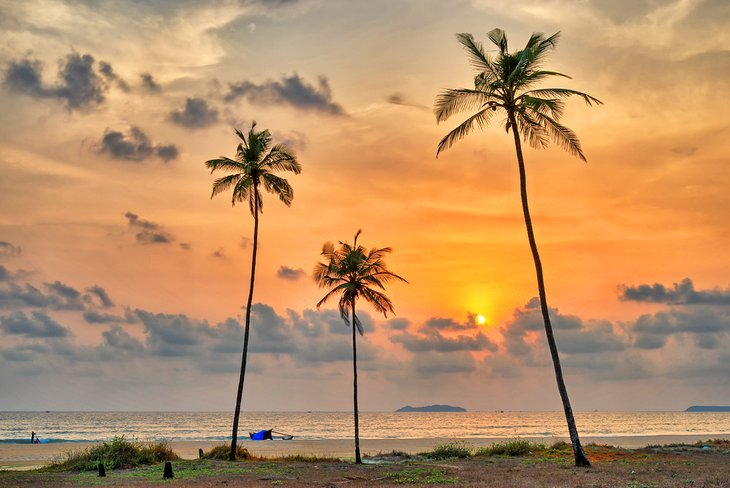
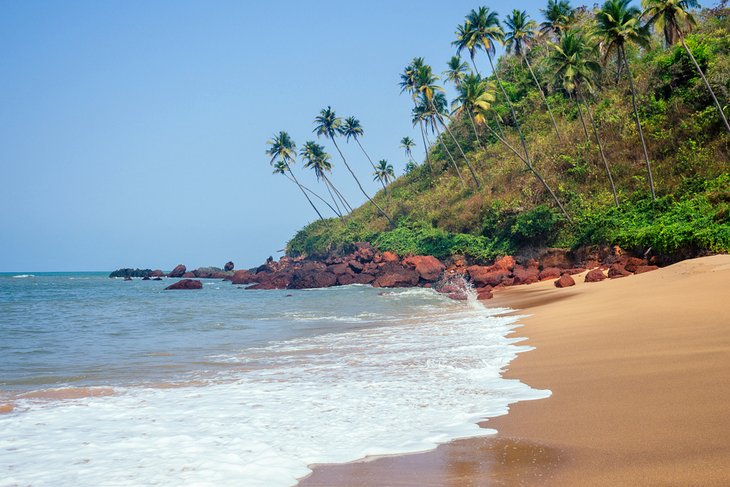

1. Palolem beach

Nearly every tourist who visits the area spends a day at Palolem Beach, a crescent-shaped stretch of white sand that overlooks the Arabian Sea in south Goa. While simply hanging out and soaking up the scenery is a perfect way to enjoy this beautiful area, Palolem Beach also offers an array of activities to fill your time. Choose from kayaking, yoga classes, dolphin-sightseeing trips, and swimming. You can also spend the night in one of Palolem's rustic coco huts, which are erected at the start of the high season.
2. Utorda beach
Utorda Beach is another stunning getaway from the more crowded beaches around Goa. It features clean, blue water; silky sand; and a few small beach shacks. Look closely as you wade in the water, and you may spot some small starfish. Utorda is a small beach in South Goa, 15.1 kilometers from Vasco da Gama via the NH566 and MDR43. It is just north of the more famous Majorda beach, so there are few people here, even in the peak season. Uttorda is a clean and quiet stretch of sand. There are some beautiful shacks where you can sit back and relax, and enjoy your drinks. Sunbeds and umbrellas are free. Uttorda is a very relaxing place.
3. Colva beach
One of Goa's most famous beaches, Colva attracts crowds of tourists during high season (mid-November through mid-February) — for good reason. The 2.4-kilometer-long beach in south Goa offers an endless array of aquatic adventure sports (including jet skiing, banana boat rides, and parasailing), sand that's as soft and as white as baby powder, and a well-developed tourism infrastructure that can cater to your every need. See for yourself at the incredible beach resorts in this area. Colva Beach is a favorite among Indian tourists, so if you're looking for a local experience, you'll find it here. Consider staying overnight at one of the many homestay accommodations offered by families in the village for an even more authentic trip.